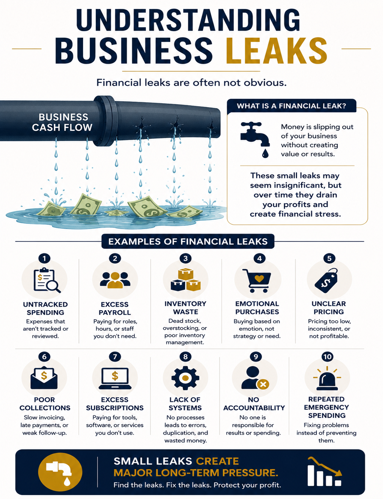

Understanding Business Leaks
Often the issue is not only income — it is the hidden operational and financial leaks quietly draining cash flow, profitability, visibility, and stability.

Untracked Spending
Small expenses repeated daily or weekly create major financial pressure over time when they are not reviewed consistently.
Poor Visibility
Without accurate reporting, owners make emotional decisions instead of strategic ones.
Inventory Issues
Overbuying, waste, dead inventory, and missing controls can quietly destroy profitability.
Operational Chaos
Disorganization creates duplicated work, reactive management, missed opportunities, and constant pressure.
Cash Flow Blind Spots
Revenue may look strong while cash flow remains unstable due to timing, debt, or uncontrolled obligations.
Lack of Systems
Businesses without structure often depend on the owner constantly solving emergencies.
Small Leaks Become Big Problems
Most financial problems do not begin as emergencies. They begin as small unmanaged leaks that slowly compound over time. Visibility, systems, accountability, and structure help stop the leaks before they become major financial pressure.